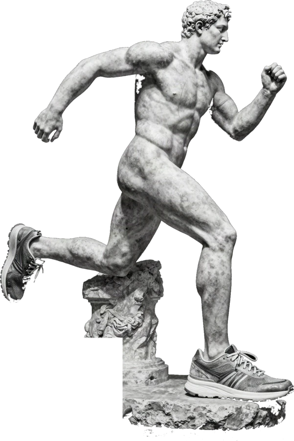
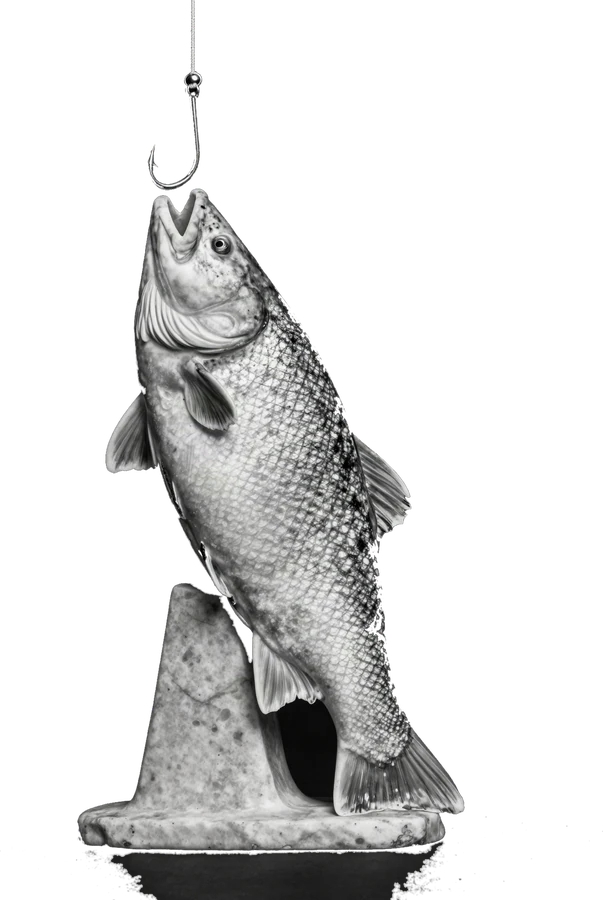

O DIA EM DUAS LINHAS · CLAUDE (só atualiza na versão com IA)
POR QUE ISSO IMPORTA · NAS SUAS PALAVRAS
NA RUA · COM GENTE
LINE-UP DE HOJE
Hoje
RITMO DE TRABALHO
0TAREFAS/7D
Trabalho

CORPO
0TREINOS
Treino
FOCO 25/10
0BLOCOS
Estudo
AMANHÃ
0DIAS
Rotina

REDES
0MIN
Atenção
VIRANDO
Presente
níveis
AMANHÃ E OS PRÓXIMOS 7 DIAS
Semana
Fechar o dia
copiar resumo →
ELA MESMA · NEUROCIÊNCIA · DADOS
← INÍCIO
Hoje
Cada tarefa fechada é o pinguinho de recompensa que o salário mensal dá pra quem é CLT. Você é a própria empresa: quem paga o pinguinho é você. Toca na faixa. Manhã pesada: celular em outro cômodo.
+ NOVA TAREFA
▲▼ MUDA A ORDEM · TOQUE DUPLO NO NÚMERO PRA DIGITAR A POSIÇÃO
← INÍCIO
Trabalho
CRP · GF
OBJETIVOS
+ NOVO OBJETIVO
← INÍCIO
Treino
CORRIDA · CAMINHADA
Exercício é a válvula de escape do estresse crônico, o veneno que corrói motivação sem avisar. Não tem hora, não tem cobrança. Registra o que foi e pronto.
0treinos no total
0nos últimos 7 dias
HISTÓRICO
MEU PLANO DE TREINO
OBJETIVOS
+ NOVO OBJETIVO
← INÍCIO
Estudo
BLOCOS 25/10
ESCOLHA O MUNDO
+ NOVO ESTUDO
COMEÇAR BLOCO SEM MUNDO
A atenção lapsa a cada 9 a 11 minutos. Quem está destreinada não estuda 4 horas: estuda 25 e descansa 10. Descanso é louça, roupa no varal, ir até a rua. Não celular: 10 a 15 min sem tela depois do bloco é o que fixa o que você acabou de fazer (meta-análise 2025). Ontem o pico de tiques foi às 18h, na pausa.
Esta grade rende muito mais com uma IA junto: você fala o que entendeu, ela devolve o que acertou, o que corrigir e o que faltou, e o resumo fica guardado aqui. Dá pra escrever na mão também, mas aí ninguém confere.
TAMANHO DO BLOCO
foco / descanso · pontos por bloco. Bloco maior vale mais porque custa mais.
25:00FOCO
Nenhum bloco ainda hoje.
RESUMOS
OBJETIVOS
+ NOVO OBJETIVO
← ESTUDO
Mundo
← INÍCIO
Rotina
AMANHÃ · CASA · SONO
Atleta olímpico tem descanso na agenda. Organizar o amanhã é 1 minuto de áudio pro Claude antes de sair do PC. Ele monta o dia. Você acorda sabendo. E decide onde o celular dorme: na manhã pesada ele fica em outro cômodo. Ter que levantar pra pegar é o intervalo onde cabe o freio (75% de produtividade a mais em quem tem dificuldade de concentrar).
0DIAS
dias seguidos com o amanhã pronto
OBJETIVOS
+ NOVO OBJETIVO
← INÍCIO
Atenção
INSTAGRAM · FACEBOOK · TIKTOK
No Reels a atenção afunila até a dissociação: 20, 30 minutos morrem e você não lembra o que viu. Aqui é só o dado, lido do seu celular. Uso a trabalho não conta: marca a janela e o app desconta.
0minutos que contam
0a trabalho
0entradas
ENTRADAS DE HOJE
OBJETIVOS
+ NOVO OBJETIVO
Dia com 90 minutos ou menos, fora o que foi a trabalho, vale 15 pontos. Acima disso, nenhum.
← INÍCIO
Quem eu estou virando
NÍVEIS
Nível aqui não é prêmio. É quem você é pras pessoas quando o comportamento vira hábito. Cada nível diz o que mudou no cérebro pra chegar nele.
EVIDÊNCIAS CONTRA A LENTE SUJA
← INÍCIO
Semana
O QUE VEM
Ver o amanhã hoje é o que faz acordar sabendo. As recorrentes já aparecem no dia em que caem. Toca no número pra abrir o que já existe.
← INÍCIO
Fechar o dia
REVISÃO ATIVA
Puxar da memória sem olhar é o que mais fixa. Uma frase escrita (escrever desacelera mais que falar): o que fez, o que estava no caminho do que não fez, o que aprendeu. Depois copia e manda pro Claude.
Nova tarefa
Compromisso = com alguém, hora marcada ou na rua. Sobe pro topo da tela com contagem regressiva e avisa 1 hora antes.
Adiar pra amanhã
Novo objetivo
Meta que você mesma define e vai contando. Ex.: 30 contatos por dia, 3 treinos por semana, 5 blocos de estudo por semana. Bateu, ganha ponto.
Registrar treino
Meu plano de treino
Cola aqui o treino da academia, a planilha de corrida, o que for. Fica salvo e você consulta na hora.
Novo estudo
Um mundo por assunto. Pode ser um livro, um curso, uma mentoria ou um tema que você quer dominar (vendas, gestão, o que for).
Uso a trabalho
Prospecção, referência pra post, falar com cliente. O que cair nessa janela sai da conta do dia.
Resumo de hoje
Sem olhar o material: conta o que você entendeu, como se estivesse explicando pra alguém. Puxar da memória é o que mais fixa (revisão ativa). Errar aqui é ótimo: mostra onde voltar.